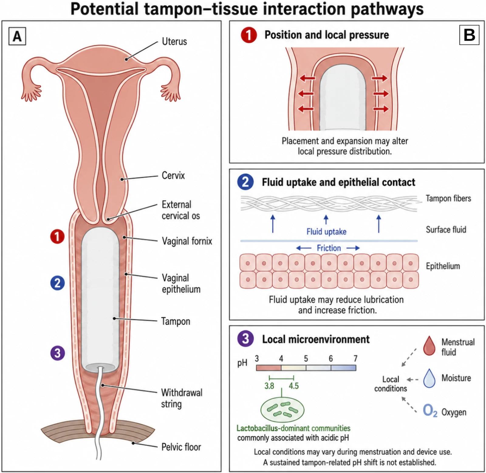
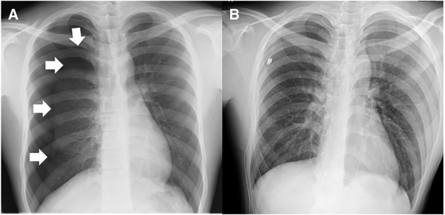
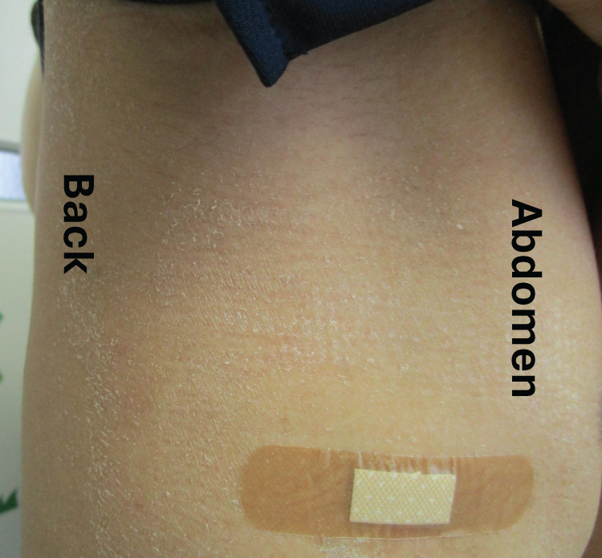

1794 — Hội chứng sốc độc tố do băng vệ sinh/bóng gạc bỏ quên ở trẻ vị thành niên: chẩn đoán nằm ở lâm sàng, hình ảnh chỉ để tìm ổ và loại bắt chước / Tampon-associated toxic shock syndrome
Tags: pattern:soc pattern:viem-mo-mem pattern:di-vat pattern:u-dich vung:am-dao vung:sinh-duc-nu vung:phoi vung:da protocol:sieung-am protocol:XR protocol:CT protocol:MRI protocol:echo score:CDC-2011
Mức chắc chắn (certainty): tổng hợp y văn (literature synthesis) — số liệu lấy từ 102 ca sốc độc tố do kinh nguyệt (m-TSS) điều trị tại 43 ICU (Clin Infect Dis 2022, PMID 33906228), 96 ca TSS sau mổ (tổng quan hệ thống 2020, trích trong ca nguyên văn), tổng quan cơ chế TSST-1 (Clin Microbiol Rev 2020, PMC7254860), ca nguyên văn 14 tuổi sau dẫn lưu tràn khí màng phổi (Surg Case Rep 2025, PMC12256205) và tổng quan TSS ở trẻ (Paediatr Drugs 2005, PMID 15777108). Chỗ chưa có số thì ghi "chưa rõ".
Câu chốt: TSS là bệnh do siêu kháng nguyên (superantigen), không phải nhiễm khuẩn huyết thông thường — cấy máu âm ở 102/102 ca. Vì vậy hình ảnh không bao giờ chẩn đoán được TSS; vai trò của bác sĩ CĐHA là tìm ổ nhiễm (băng vệ sinh/bóng gạc bỏ quên, ổ mủ sau mổ, áp-xe), loại bắt chước (viêm mô hoại tử có khí, huyết khối, áp-xe thận) và đánh giá biến chứng (phù phổi/ARDS, suy tim, thiếu máu chi). Trong khi đó, bỏ sót = tử vong trong 24–48 giờ. Nối với 1735 – Dị vật âm đạo ở trẻ và 1682 – Rò bàng quang–âm đạo ở trẻ.
1. Tổng quan bệnh học – cơ chế hình ảnh
1.1 Vì sao băng vệ sinh gây sốc (cơ chế phân tử, không phải "nhiễm trùng máu")
- Siêu kháng nguyên TSST-1 (toxic shock syndrome toxin 1) do Staphylococcus aureus tiết ra, không cần xử lý kháng nguyên: nó bắc cầu MHC lớp II trên tế bào trình diện kháng nguyên với chuỗi Vβ2 của thụ thể tế bào T (và với CD40, CD28) → hoạt hóa đa dòng tế bào T, không chọn lọc đặc hiệu kháng nguyên.
- Hệ quả định lượng: bình thường tế bào T mang Vβ2 chỉ ~10%, nhưng trong TSS cấp chúng tăng sinh tới 70% tổng tế bào T; bão cytokine (TNF, IL-1, IL-6, IFN-γ) gây tăng thấm mao mạch, giãn mạch, ức chế cơ tim → tụt huyết áp + phù + tổn thương đa cơ quan. Liều gây chết ước tính ở người: 0,1 µg độc tố (PMC7254860).
- Vì sao là băng vệ sinh chứ không phải tampon nào cũng vậy: sản xuất TSST-1 tuyệt đối cần oxy; âm đạo bình thường kỵ khí, còn băng vệ sinh đưa oxy vào theo độ thấm hút — đây là lý do TSS do kinh nguyệt gắn với tampon, còn TSS do liên cầu (GAS) thì không. Ngoài ra: glucose ức chế ngược (catabolite repression) sản xuất độc tố, còn protein là cơ chất; pH trước kinh giảm kiểm soát của lactobacilli, cho phép S. aureus tăng từ không phát hiện được lên 10⁷–10¹¹ vi khuẩn trong âm đạo, đỉnh ngày 2–3 của kỳ kinh — đúng lúc khởi phát m-TSS.
- Vì sao sốc mà cấy máu âm: tổn thương do độc tố lưu hành, không do vi khuẩn trong máu. Trong 102 ca ICU, 100% cấy máu âm, nhưng MSSA mọc từ 92/96 mẫu âm đạo và TSST-1 có ở 66/76 chủng (87%). Đây là lý do không được chờ cấy máu để chẩn đoán.
- Vì sao ban đỏ rồi bong da: viêm mao mạch da + thoát dịch → ban đỏ kiểu "cháy nắng" (sunburn-like erythroderma); tổn thương lớp gai và thượng bì → bong da (desquamation) ở ngày 10–14, tức sau khi bệnh nhân đã ổn định — dấu hiệu này không giúp chẩn đoán lúc cấp cứu, chỉ giúp nhìn lại.
1.2 Ngưỡng định lượng nằm lòng
| Chỉ số | Con số | Nguồn |
|---|---|---|
| Tỉ lệ mắc lịch sử (Mỹ, 1976–1980) | 14,4/100.000 phụ nữ 12–49 tuổi | PMC7254860 |
| Tuổi trung vị trong ICU | 18 tuổi (IQR 16–24) — đúng nhóm vị thành niên | PMID 33906228 |
| Cấy máu dương | 0/102 | PMID 33906228 |
| S. aureus nhạy methicillin từ âm đạo | 92/96 (95,8%) | PMID 33906228 |
| Chủng mang gen TSST-1 | 66/76 (87%) | PMID 33906228 |
| Đạt tiêu chuẩn CDC 2011 "xác định" lúc nhập ICU | 0/102; "nghi ngờ" 52% | PMID 33906228 |
| Cần vận mạch | 84% | PMID 33906228 |
| Cần đặt nội khí quản | 21% | PMID 33906228 |
| Kháng sinh chống độc tố (clindamycin/linezolid) | 79% | PMID 33906228 |
| IVIG | 8% | PMID 33906228 |
| Tử vong trong ICU | 0/102 | PMID 33906228 |
| Tử vong TSS do tụ cầu ở trẻ | 3–5% | PMID 15777108 |
| Tử vong TSS do liên cầu ở trẻ | 5–10% (người lớn 30–80%) | PMID 15777108 |
| TSS sau mổ (39.000 ca phẫu thuật) | 0,003% (12 ca) | PMC12256205 |
| TSS sau mổ — tổng quan 96 ca (1978–2018) | Khởi phát trung vị 4 ngày; 24% di chứng vĩnh viễn; tử vong 9,38%; 54,2% có triệu chứng tiêu hóa | PMC12256205 |
| Tỉ lệ không do kinh nguyệt (giám sát Pháp 2008) | 65%, tử vong 22% so với 0% ở thể kinh nguyệt | PMC12256205 |
| Bong da xuất hiện | ngày 10 sau khởi phát (ca nguyên văn) | PMC12256205 |
Phản biện: tử vong 0% trong 102 ca ICU (2022) mâu thuẫn với 22% của giám sát Pháp 2008 và 9,38% của tổng quan sau mổ. Khác biệt đến từ chọn bệnh (thể kinh nguyệt trẻ, khỏe mạnh so với thể sau mổ/người già) và thời điểm chẩn đoán. Không được trích "TSS lành tính" cho mọi thể.
1.3 Vì sao hình ảnh trông như vậy (vật lý + mô bệnh)
- Phổi (X-quang/CT): tăng thấm mao mạch phổi → mờ kính mờ hai bên, đối xứng, không choán chỗ, có thể kèm tràn dịch màng phổi hai bên; bóng tim không to nếu chưa có suy tim. Đây là phù phổi không do tim (non-cardiogenic); khác phù do tim ở tim to, phân bố hình cánh bướm, dày vách. Trong TSS còn có ức chế cơ tim → có thể tim to + EF giảm trên siêu âm (thường hồi phục sau 1–2 tuần).
- Băng vệ sinh/bóng gạc trong âm đạo: bông + không khí có đậm độ thấp — trên CT không cản quang là cấu trúc hình trụ đậm độ thấp trong lòng âm đạo (dễ nhầm với khí hoặc dịch); trên siêu âm là cấu trúc tăng âm trong âm đạo, có thể có bóng lưng; trên MRI T2 là cấu trúc giảm tín hiệu. Vì vậy X-quang bụng/chậu gần như vô dụng — bông không cản quang.
- Mô mềm (CT): viêm mô hoại tử do liên cầu/tụ cầu → khí trong mô mềm (gas), dày cân (fascial thickening), tụ dịch dọc cân; đây là dấu hiệu ngoại khoa cấp cứu, không phải TSS đơn thuần.
- Khớp/chi: thiếu máu chi do tụt huyết áp + đông máu nội mạch rải rác → thiếu tín hiệu mạch trên Doppler, không phải huyết khối đơn thuần.
2. Mẫu hình + chẩn đoán phân biệt theo vị trí (gamut)
Mẫu hình: trẻ gái vị thành niên (hoặc phụ nữ trẻ sau sinh/sau mổ) với sốt cao + ban đỏ lan tỏa + tụt huyết áp + tổn thương ≥ 3 cơ quan (tiêu hóa, cơ, thận, gan, huyết học, thần kinh trung ương), thường trong 2–5 ngày đầu kỳ kinh hoặc 2–4 ngày sau mổ.
Gamut theo nguồn ổ:
- Do kinh nguyệt (menstrual): băng vệ sinh, cốc nguyệt san, màng ngăn âm đạo, bọt biển tránh thai, bóng gạc bỏ quên sau soi/đặt thuốc.
- Không do kinh nguyệt (non-menstrual) — 65% trong giám sát Pháp: vết mổ/vết thương, dẫn lưu (như ca 14 tuổi sau chọc hút màng phổi), áp-xe (cơ, quanh hậu môn, vú, xoang), viêm xương–tủy, bỏng, viêm mũi xoang có bóng gạc, nhiễm trùng sau sinh (viêm nội mạc tử cung).
- Bắt chước (mimics): sốc nhiễm khuẩn từ đường niệu (urosepsis)/áp-xe vùng chậu, viêm mô hoại tử, bệnh Kawasaki, sốc phản vệ, MIS-C, DRESS/SJS, sốt phát ban do Rickettsia, sốt xuất huyết Dengue, hội chứng bong vảy da do tụ cầu (SSSS).
Gamut theo vị trí tổn thương trên hình ảnh (để chọn đúng ổ):
- Âm đạo/tử cung: băng vệ sinh, bóng gạc, ứ dịch, viêm nội mạc tử cung sau sinh.
- Mô mềm/thành bụng/chi: áp-xe, viêm mô hoại tử (khí trong mô).
- Phổi–màng phổi: ARDS, tràn dịch, ổ nhiễm sau dẫn lưu.
- Tiết niệu: áp-xe thận/quanh thận, viêm bể thận — bắt chước sốc nhiễm khuẩn hay gặp nhất ở trẻ gái.
- Tim: suy tim cấp do độc tố, tràn dịch màng tim (ít gặp).
Mnemonic "TAMPON": Tụt huyết áp, Anh hưởng đa cơ quan ≥ 3, Mụn/ban đỏ kiểu cháy nắng, Phân biệt với sốc nhiễm khuẩn, Oxy là điều kiện sinh độc tố (băng vệ sinh), Ngày 10–14 bong da.
3. Bảng so sánh phân biệt (ma trận đối chiếu)
| Thực thể (entity) | Hình ảnh/lâm sàng điển hình | Chốt vào (rule-in) | Chốt loại (rule-out) | Gợi ý xác nhận |
|---|---|---|---|---|
| TSS do kinh nguyệt | Sốt > 38,9 °C + ban đỏ lan tỏa + tụt huyết áp trong 2–5 ngày đầu kỳ kinh; siêu âm/CT thấy băng vệ sinh trong âm đạo; bong da ngày 10–14 | Sốc + ban + đang dùng băng vệ sinh + ≥ 3 cơ quan | Có ổ mủ rõ ở nơi khác (áp-xe thận, viêm phổi) → nghĩ sốc nhiễm khuẩn | Cấy âm đạo, tháo băng vệ sinh ngay, theo dõi huyết áp |
| TSS không do kinh nguyệt (sau mổ/dẫn lưu) | Sốt 2–4 ngày sau mổ, ban kiểu cháy nắng, tiêu chảy/nôn (54,2%), vết mổ trông sạch | Sốc + ban + tiền sử mổ/dẫn lưu trong 4 ngày | Vết mổ sưng nóng đỏ mủ rõ → áp-xe, cần dẫn lưu chứ không chỉ kháng sinh | Cấy dịch/đầu dẫn lưu, không đợi cấy máu |
| Sốc nhiễm khuẩn đường niệu | Sốt + đau hông lưng + lắc lư thận dương; CT có thận to, giảm ngấm, ổ áp-xe | Ổ áp-xe trên CT + cấy nước tiểu dương | CT thận bình thường + cấy nước tiểu âm → ít khả năng | CT bụng có cản quang, cấy nước tiểu trước kháng sinh |
| Viêm mô hoại tử | Đau không tương xứng, da tím/tối, khí trong mô mềm trên CT, dày cân | Khí trong mô mềm + dày cân + đau nặng | Không có khí, không dày cân → ít khả năng | CT mô mềm; mổ thăm dò không chờ hình ảnh |
| Bệnh Kawasaki | Trẻ < 5 tuổi, sốt ≥ 5 ngày, môi nứt, lưỡi dâu tây, hạch cổ, phù/bong da đầu ngón; tụt huyết áp ít gặp | Sốt ≥ 5 ngày + ≥ 4/5 tiêu chuẩn + giãn mạch vành | Sốc sâu + ban ngay ngày 1–2 → nghĩ TSS hơn | Siêu âm tim, tiểu cầu, CRP |
| SSSS (bong vảy da do tụ cầu) | Trẻ nhỏ, bong da thành mảng lớn, không tụt huyết áp, độc tố bong vảy (exfoliative toxin) | Bong da + huyết áp ổn định | Có sốc + tổn thương đa cơ quan → TSS | Cấy da/mũi, sinh thiết thượng bì |

Sơ đồ mặt cắt dọc khung chậu: (A) băng vệ sinh nằm trong âm đạo, liên quan cổ tử cung, cùng đồ và sàn chậu; (1) áp lực và vị trí, (2) hấp thu dịch và tiếp xúc biểu mô, (3) vi môi trường (pH 3,8–4,5 khi có lactobacilli). Đây là cơ sở để hiểu vì sao độ thấm hút + oxy + pH trung tính thúc đẩy sản xuất TSST-1. Front Bioeng Biotechnol 2026 (PMC13624471), CC BY 4.0.Ba dấu hiệu quyết định
- Sốc + ban đỏ kiểu cháy nắng + đang hành kinh = TSS cho tới khi chứng minh ngược lại: tháo băng vệ sinh là điều trị, không phải "chờ kết quả".
- Cấy máu âm không loại trừ: 0/102 ca dương; phải cấy âm đạo/dịch ổ và tìm độc tố.
- Khí trong mô mềm = viêm mô hoại tử, không phải TSS: cần mổ ngay, không chờ hội chẩn.
4. Protocol chụp + hệ phân độ/điểm chuẩn hóa
4.1 Thứ tự xử trí (hình ảnh đứng sau lâm sàng)
- Lâm sàng trước: đo huyết áp, nhịp tim, tri giác; hỏi kỹ "đang dùng băng vệ sinh/cốc nguyệt san/bóng gạc không"; khám âm đạo bằng mỏ vịt (nếu đã dậy thì và hợp tác) để lấy băng vệ sinh/bóng gạc ra và cấy.
- Cấy trước kháng sinh: máu (2 bộ), âm đạo/dịch ổ, nước tiểu; không chờ kết quả để bắt đầu kháng sinh.
- Hình ảnh có mục tiêu — không chụp tràn lan:
- Siêu âm vùng chậu (đầu tay, không bức xạ): tìm băng vệ sinh/bóng gạc (cấu trúc tăng âm trong âm đạo), ứ dịch, áp-xe vùng chậu, xoắn buồng trứng (bắt chước).
- X-quang ngực tại giường nếu khó thở/giảm oxy: ARDS/phù phổi, tràn dịch, ổ nhiễm sau dẫn lưu.
- CT bụng–chậu có cản quang khi siêu âm không kết luận hoặc nghi áp-xe/viêm mô hoại tử; CT không cản quang đủ để tìm khí trong mô mềm.
- Siêu âm tim khi có tụt huyết áp kéo dài, tiếng thổi mới, hoặc nghi suy tim do độc tố — đánh giá EF và tràn dịch màng tim.
- Doppler chi khi chi lạnh/tím — loại tắc mạch do sốc.
- Không chụp MRI toàn thân "tầm soát ổ nhiễm" trong sốc: thời gian vận chuyển và thuốc an thần là nguy hiểm, trong khi ổ chính thường đã biết sau khám.
4.2 Tiêu chuẩn CDC 2011 (dùng để phân loại, KHÔNG dùng để loại trừ tại giường)
- Sốt ≥ 38,9 °C.
- Ban đỏ lan tỏa (erythroderma).
- Bong da 1–2 tuần sau khởi phát (ở bàn tay, bàn chân, hoặc toàn thân).
- Tụt huyết áp: người lớn HATT ≤ 90 mmHg; trẻ < 5th percentile theo tuổi hoặc tụt ≥ 15% so với nền.
- ≥ 3 cơ quan: tiêu hóa (nôn/tiêu chảy), cơ (CK tăng ≥ 2 lần), niêm mạc (sung huyết âm đạo/hầu), thận (creatinin ≥ 2 lần hoặc > 2 mg/dL), gan (bilirubin/transaminase ≥ 2 lần), huyết học (tiểu cầu < 100.000/µL), thần kinh trung ương (tri giác không định hướng/không có sốt).
- Xác định (confirmed): đủ tất cả + cấy dương (máu/âm đạo/dịch ổ). Nghi ngờ (probable): đủ lâm sàng, cấy âm.
- Vì sao không dùng để loại trừ: 0/102 ca trong ICU đạt mức "xác định" lúc nhập viện và chỉ 52% đạt "nghi ngờ" — tiêu chuẩn này quá chặt cho thực hành cấp cứu, đúng như tác giả kết luận. Chẩn đoán tại giường là sốc + ban + ≥ 3 cơ quan, có hay không có kết quả cấy.
4.3 Điều trị (để hiểu vì sao hình ảnh chỉ là hỗ trợ)
- Kiểm soát nguồn (source control): tháo băng vệ sinh/bóng gạc, dẫn lưu ổ mủ, cắt lọc mô hoại tử. Đây là can thiệp quyết định sống còn, không phải kháng sinh.
- Kháng sinh: clindamycin hoặc linezolid (ức chế tổng hợp độc tố — "antitoxin") + kháng tụ cầu (vancomycin/oxacillin theo kháng sinh đồ); ở thể liên cầu thêm penicillin + clindamycin.
- Hồi sức: bù dịch tinh thể, vận mạch (norepinephrine), thông khí khi ARDS.
- IVIG: dùng ở 8% ca trong loạt ICU (PMID 33906228); bằng chứng không đồng nhất — không thay thế kiểm soát nguồn. Ghi rõ "chưa rõ hiệu quả" khi tư vấn.
4.4 Sơ đồ tiếp cận
flowchart TD
A[Trẻ gái vị thành niên: sốt + ban đỏ + tụt huyết áp] --> B[Đo HA, khám âm đạo: có băng vệ sinh/bóng gạc?]
B -->|Có| C[THÁO NGAY + cấy âm đạo + kháng sinh chống độc tố]
B -->|Không| D[Tìm ổ khác: vết mổ, dẫn lưu, áp-xe, đường niệu]
C --> E[Siêu âm chậu + X-quang ngực tại giường]
D --> E
E --> F{Có khí trong mô mềm hoặc ổ mủ?}
F -->|Có| G[Mổ/dẫn lưu cấp: viêm mô hoại tử hoặc áp-xe]
F -->|Không| H[Theo dõi ICU: Doppler chi, siêu âm tim nếu HA kéo dài]
G --> H
H --> I[Bong da ngày 10-14 xác nhận chẩn đoán nhìn lại]
5. Biến thể bình thường và cạm bẫy
- "Không có băng vệ sinh" không loại trừ TSS: 65% ca tụ cầu là không do kinh nguyệt trong giám sát Pháp; nguồn có thể là vết mổ, dẫn lưu, áp-xe, xoang.
- Cấy máu âm là bình thường trong TSS: 0/102; đừng đợi cấy máu rồi mới điều trị.
- Bong da xuất hiện muộn (ngày 10–14): lúc cấp cứu chỉ có ban đỏ — nếu chờ bong da mới chẩn đoán là chờ quá muộn.
- Băng vệ sinh không cản quang: X-quang chậu bình thường là chuyện thường; phải siêu âm/CT mới thấy. Ngược lại, khí trong âm đạo trên CT là bình thường, không phải dấu hiệu hoại tử.
- Ban đỏ khó thấy ở da sẫm màu: tìm ban ở niêm mạc, lòng bàn tay/chân, vùng nếp và hỏi "da rát như cháy nắng".
- Nhầm với sốc nhiễm khuẩn thông thường: dẫn tới chỉ dùng kháng sinh, không tháo băng vệ sinh/không dẫn lưu → tử vong dù kháng sinh đúng.
- Nhầm với SSSS: SSSS không tụt huyết áp, do độc tố bong vảy, trẻ nhỏ; điều trị khác (kháng sinh, chăm sóc da).
- Tái phát: khuyến cáo không dùng lại tampon ít nhất vài tháng, hoặc dùng xen kẽ; tư vấn này thuộc phần phòng bệnh, không phải hình ảnh.
- Chụp CT toàn thân "tìm ổ" trong sốc: làm chậm kiểm soát nguồn, tăng nguy cơ thuốc an thần — chỉ chụp theo mục tiêu.
6. Tự lượng giá — Blind Quiz ngay trên trang tĩnh
Ca 1 — Nam 14 tuổi, tràn khí màng phổi phải, đặt catheter 18-Fr. Ngày thứ 2 sốt 39 °C, nôn, tiêu chảy. Đọc phim trước.

- Câu hỏi: (1) Hai ảnh khác nhau ở đâu? (2) Sốt ngày 2 sau dẫn lưu gợi ý gì? (3) Cấy máu âm có loại trừ chẩn đoán không?
Bấm để hiện đáp án (findings + chẩn đoán)
- Dấu hiệu: (A) tràn khí màng phổi phải (mũi tên) với phổi xẹp; (B) sau đặt catheter 18-Fr, phổi phải nở tốt, không còn tràn khí.
- Chẩn đoán: TSS không do kinh nguyệt sau dẫn lưu màng phổi — cấy dịch màng phổi và đầu catheter mọc S. aureus sinh TSST-1 + enterotoxin C; cấy máu âm; bong da ở nách/mông ngày 10; khỏi sau 14 ngày kháng sinh.
- Bài học: nguồn nhiễm có thể trông sạch; sốt + ban + tiêu chảy sau can thiệp 2–4 ngày phải nghĩ TSS, không chờ cấy máu.
- Nguồn ảnh: Surg Case Rep 2025 (PMC12256205), Hình 1, CC BY 4.0.
Ca 2 — Cùng bệnh nhi, ngày thứ 10 sau đặt dẫn lưu.

- Câu hỏi: (1) Dấu hiệu này tên gì? (2) Vì sao nó xuất hiện muộn? (3) Nó giúp chẩn đoán hay chỉ xác nhận nhìn lại?
Bấm để hiện đáp án (findings + chẩn đoán)
- Dấu hiệu: bong da (desquamation) dạng vảy ở nách, mông và thân — hậu quả của tổn thương thượng bì do độc tố và thoát dịch.
- Ý nghĩa: xuất hiện 1–2 tuần sau khởi phát, tức sau giai đoạn sốc → chỉ xác nhận chẩn đoán nhìn lại, không dùng để chẩn đoán cấp. Bệnh nhi đã được điều trị và xuất viện ngày 11.
- Nguồn ảnh: Surg Case Rep 2025 (PMC12256205), Hình 2, CC BY 4.0.
Ca 3 — Nữ 16 tuổi, ngày 3 kỳ kinh, sốt 39,5 °C, ban đỏ toàn thân, HATT 78 mmHg, nôn 6 lần, creatinin 1,9 mg/dL, tiểu cầu 88.000/µL. Siêu âm chậu: cấu trúc tăng âm trong âm đạo, không có dịch tự do.
- Câu hỏi: (1) Chẩn đoán và việc đầu tiên phải làm? (2) Có đạt tiêu chuẩn CDC "xác định" không? (3) Có cần CT bụng–chậu ngay không?
Bấm để hiện đáp án (findings + chẩn đoán)
- Chẩn đoán: TSS do kinh nguyệt (sốt + ban + tụt huyết áp + tiêu hóa/thận/huyết học = ≥ 3 cơ quan). Việc đầu tiên: tháo băng vệ sinh + cấy âm đạo + kháng sinh chống độc tố, không chờ kết quả.
- CDC: chưa "xác định" vì chưa có kết quả cấy; có thể đạt mức "nghi ngờ". Theo loạt 102 ca ICU, 0 ca đạt mức xác định lúc nhập viện — tiêu chuẩn này không dùng để trì hoãn điều trị.
- Hình ảnh: không cần CT ngay — siêu âm đã thấy dị vật, không có ổ mủ/dịch tự do; CT chỉ đặt ra khi siêu âm không kết luận, nghi áp-xe, hoặc sốc không giải thích được. Đừng để việc chụp làm chậm tháo băng vệ sinh.
Bài liên quan chéo
- 1735 – Dị vật âm đạo ở trẻ chưa rò
- 1682 – Rò bàng quang–âm đạo ở trẻ
- 691 – Sỏi bàng quang và sỏi quanh catheter ở trẻ
- 1430 – Độc tính thần kinh sau CAR-T (ICANS)
Ảnh
images/1794_soc-doc-to-bang-ve-sinh_XR_PMC12256205.jpg— Surg Case Rep 2025 (PMC12256205), Hình 1, CC BY 4.0.images/1794_soc-doc-to-bang-ve-sinh_Anh-lam-sang_PMC12256205.jpg— cùng bài, Hình 2, CC BY 4.0.images/1794_soc-doc-to-bang-ve-sinh_So-do_PMC13624471.jpg— Front Bioeng Biotechnol 2026 (PMC13624471), Hình 2, CC BY 4.0.- Nguồn + giấy phép từng ảnh:
images/CREDITS.md; nguồn bài:sources.md.
Không dùng để chẩn đoán độc lập khi chưa có người hướng dẫn.